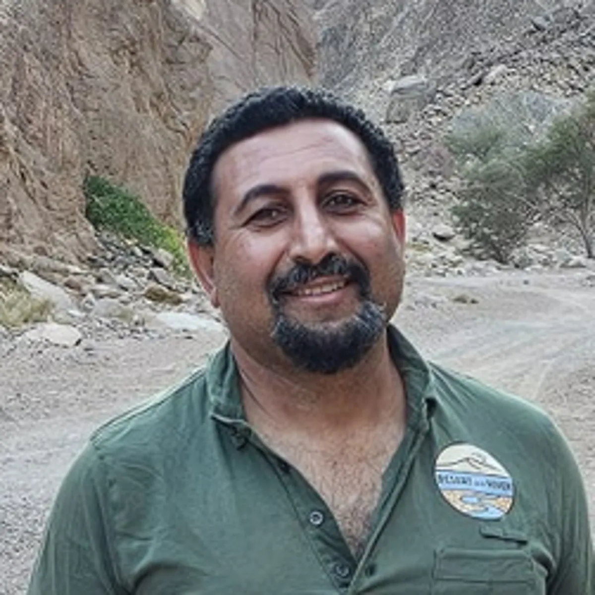

الأشخاص وراء Desert & River
حياة مشتركة صاغها التاريخ والرعاية والصحراء. اقرأ قصة آنيت، ورحلتنا معًا، ومسيرة جوزيف.

التاريخ لم يكن يومًا في الكتب فقط
وُلدت في هولندا عام 1974، في بيت مليء بالكتب والحكايات وحب عميق للتاريخ. بينما كان الأطفال الآخرون يلعبون، كنت مفتونة بشيء لا يراه معظم الناس: فكرة أن تحت أقدامنا عوالم كاملة.
الرومان. قرى العصور الوسطى. قبائل ما قبل التاريخ. طبقات من الزمن ترقد بهدوء في التربة. إذا حفرت في الأرض، قد تجد عملة، أو قطعة فخار، أو جزءًا من حياة إنسان عاش قبل قرون.
عندما كان معلّميّ يسألونني ماذا أريد أن أصبح، كنت أجيب دون تردد: عالمة آثار.
لم أكن أفهم المهنة تمامًا، لكنني كنت أفهم الدهشة. كنت أفهم الكنوز. كنت أفهم سحر الكشف عن قصص دفنها الزمن.
شجّعت أمي هذا الحلم. أهدتني كتابًا عن الآثار في هولندا، مليئًا بصور اكتشافات أُخرجت من الأرض. وكانت تفتنني بشكل خاص المقابر الحجرية القديمة في الشمال، الهونيبيدن: أحجار ضخمة رُصّت قبل آلاف السنين. كان الناس يعتقدون أن العمالقة بنوها. في الحقيقة هي غرف دفن عمرها 5000 عام. وما زالت قائمة في الأرض المفتوحة، شاهدة صامتة على ماضٍ بعيد.
التاريخ لم يكن شيئًا في الكتب فقط. كان حيًّا.
في الوقت نفسه اكتشفت شغفًا آخر: اللغات. كانت الكلمات تأتيني بسهولة، ومعها جاء الحنين إلى الأماكن البعيدة. كان السفر يناديني. لذلك، بعد أن أنهيت دراسة التاريخ، اتخذت قرارًا عمليًا لكنه مغامر: أن أصبح مترجمة. كان ذلك قبل أن يتحدث أحد عن الرحّالة الرقميين، لكنني كنت أحلم بالفعل بحياة بلا حدود. إذا كنت أستطيع الترجمة، فأستطيع العمل من أي مكان في العالم.
ثم جاءت مصر
في رحلة مع أخي وزوجته زرت دهب. وفي إحدى الأمسيات خرجنا إلى الصحراء. تناولنا العشاء تحت سماء لا نهاية لها. كان الصمت شاسعًا، وبدت النجوم قريبة كأنها في متناول اليد. في تلك الليلة تغيّر شيء في داخلي. لم تكن ليلتان في الصحراء كافيتين.
فحجزنا رحلة أطول مع مرشد صحراوي محلي: جوزيف.
سافرنا إلى أعماق سيناء، إلى معبد حتحور القديم في سرابيط الخادم، وهو مكان لا يراه إلا قلة من الزوار. هناك، في قلب الصحراء، وسط أطلال أقدم مما يتخيله المرء، حدث شيء استثنائي.
وقعنا في الحب. عند معبد حتحور، إلهة الحب عند المصريين القدماء. شعرنا وكأن ذلك كان مكتوبًا في الحجارة.
عندما عدت إلى هولندا، لم يبقَ قلبي هناك. عدت إلى مصر: إلى جوزيف، وإلى الصحراء، وإلى التاريخ المخبأ في جبال سيناء.
اكتشفنا أننا نتشارك الشغف نفسه: حبًا عميقًا للتاريخ وللقوة الهادئة للصحراء. وكلما استكشفنا أكثر، أدركنا أمرًا مفاجئًا: قليلون جدًا يعرفون تاريخ سيناء حقًا. طرقها التجارية القديمة. معابدها. نقوشها. قصصها المنسية.
فقررنا أن نغيّر ذلك.
بدأنا نبحث وندرس ونسير في الدروب بأنفسنا. لم نرد أن نقدّم مجرد رحلات صحراوية، بل رحلات عبر الزمن. أن نقف في الأماكن القديمة ونروي القصص الحقيقية. أن نجعل الناس يشعرون بما شعرنا به: أن التاريخ ليس ميتًا. إنه ينتظر.
وهكذا بدأت حياتنا معًا: بالحب، وبالتاريخ، وبالصحراء شاهدةً علينا.

رحلات تتجاوز المألوف
التقينا لأول مرة في الصحراء، عند معبد حتحور في سيناء، حيث كان جوزيف يقود رحلة قمت بها مع أخي وزوجته. لم يكن أحد منا يعلم حينها أن هذا اللقاء سيشكّل بقية حياتنا.
لم تجمعنا تلك الرحلة فحسب، بل أشعلت حبًا عميقًا للصحراء وتاريخها الخفي. ومع الوقت تحوّل الافتتان المشترك إلى حياة مشتركة، ثم إلى طريقة جديدة في الإرشاد.
من هذا الشعور وُلدت Desert & River: الرغبة في تقديم رحلات فيها وقت أكثر، وصدق أكثر، ورعاية أكبر للحيوانات، واحترام أكبر للأرض نفسها.
كان جوزيف قد بدأ طريقه بالفعل. ففي عام 2005 أسس مع أخيه بوب شركة King Safari. وفي عام 2008 انضمت زوجته إيرينا وساعدت في تطوير الشركة. وفي العام نفسه جاءت آنيت أيضًا، وشكّلنا نحن الأربعة King Safari معًا. وبالشغف والعمل الجاد وأيام لا تُحصى في جبال سيناء ووديانها، نمت الشركة.
ثم جاءت الثورة في 2011، ومعها الغموض والتحديات. لكننا بقينا. آمنّا بالصحراء وبما نبنيه. وفي 2015 أسسنا نحن الأربعة أيضًا فندق سبابا، وفي 2020 افتتحنا فندق ليديا. واصلنا النمو، دائمًا معًا.
بحلول 2025 تغيّر شيء في داخلنا. وجد جوزيف وآنيت نفسيهما يحنّان من جديد إلى شيء أكثر خصوصية. كلانا يحب الصحراء بعمق: أن نكون تحت النجوم، وأن نمشي في الصمت، وأن نراقب الحيوانات. نحن نحب كل الحيوانات: القطط والكلاب والجمال. وبدأنا نفكر جيدًا في الطريقة الصحيحة لتنظيم الرحلات الصحراوية.
كثيرًا ما تُحمَّل الجمال فوق طاقتها بالماء ومعدات التخييم والإمدادات الثقيلة، فقط لتوفير تكلفة سيارة مرافقة. قد يبدو ذلك رومانسيًا، لكنه قاسٍ على الحيوانات. بالنسبة لنا، رفاهية الحيوان تأتي أولًا. في رحلات Desert and River نصطحب دائمًا سيارة مرافقة تحمل المعدات والطعام والماء وأدوات التخييم. لا تحمل الجمال سوى بطانيات خفيفة ليجلس الضيوف براحة. وعندما نسافر بالجمال، نحمل لها أيضًا طعامًا جيدًا.
وبالطبع نحمل لأنفسنا طعامًا رائعًا. كل ليلة نطهو شيئًا مميزًا على النار المكشوفة. نصنع البيتزا وأنواعًا مختلفة من الخبز وحلويات مثل البانانا سبليت والأبل كرامبل. ونبتكر باستمرار وصفات جديدة يمكن تحضيرها في الصحراء. تقاسم الطعام تحت النجوم جزء من السحر.
نزور الأماكن المشهورة إذا رغب الضيوف، مثل الوادي الملوّن ووادي عرادة، لكننا نرفض الاستعجال. لا نحشر الوادي الملوّن والوادي الأبيض في حضرة ووادي عرادة وصخرة المشروم وكل شيء آخر في يوم واحد مستعجل، عشر دقائق هنا وخمس هناك. نأخذ وقتنا. نتأمل النقوش. نشعر بالصمت. ننام تحت النجوم. ندع الصحراء تُعاش، لا تُستهلك.
ونتحدث أيضًا: عن حياة البدو، والحياة اليومية في مصر، والتقاليد، والتاريخ، والواقع المعاصر. كثيرًا ما يخبرنا الضيوف الذين يقضون معنا ثلاثة أيام خلال عطلة مدتها أسبوعان أن تلك الأيام الثلاثة كانت أكثر ما له معنى في رحلتهم كلها. تعلّموا أكثر، ورأوا أكثر، وعاشوا التجربة بعمق أكبر من كل الأيام الأخرى مجتمعة.
وفي 2026 أسسنا أخيرًا معًا Desert and River، انعكاسًا لكل ما نؤمن به. رحلاتنا تدور حول الحقيقة، وحول مهد الأبجدية، ومقابر عمرها 5000 عام، ورسوم كهوف عمرها 12000 عام، لكنها تدور أيضًا حول الرعاية والوقت والتواصل وحب هذه الأرض الاستثنائية.
نحن ببساطة نعطي الناس ما لدينا: حبنا للصحراء، واحترامنا لحيواناتها، وشغفنا بالتاريخ، والسحر الهادئ للنوم تحت سماء مليئة بالنجوم.
نعمل بتصاريح، وبالتزام كامل باللوائح، وبتأمين، ومع واجب الرعاية، ونخطط بتحضير وافر: المركبات والوقود والطعام والماء وخطط الطوارئ جزء دائم من العمل المسؤول في الصحراء.

من الأطلال المخفية إلى هدوء الصحراء
وُلدت في مارس 1977 في قرية صغيرة قرب سوهاج. وعندما كنت طفلًا صغيرًا، ربما في الثالثة أو الرابعة، كان عالمي مليئًا بالأسرار.
تحت كنيسة قريتنا مباشرة كان هناك عالم خفي من التاريخ المصري القديم والمسيحي المبكر. كنت أتسلل إليه مع أصدقائي لنلعب، رغم أن الكبار كانوا يحذّروننا دائمًا من الاقتراب.
أظن أن حبي للتاريخ بدأ حقًا هناك: في الظلال المعتمة لتلك الأطلال.
لكن عندما بلغت السادسة أو السابعة انتهى اللعب. بدأت العمل في مصنع معادن. كان عملًا ميكانيكيًا ثقيلًا، أثقل من أن يتحمله طفل، لكن ذلك المصنع هو ما علّمني حب القراءة. كرهت الشحم والعمل الشاق إلى درجة أنني عرفت أن المدرسة هي طريقي الوحيد للخروج.
حلم الخمسة والستين قرشًا
أصبحت مهووسًا بالكتب. كلما أنهيت كتبي المدرسية، أردت المزيد. في ذلك الوقت كنت أكسب 25 قرشًا في الأسبوع من المصنع. وكان أبي يعطيني 5 قروش إضافية في يوم إجازتنا، فيصبح معي 30 قرشًا للأسبوع كله.
معظم الأطفال كانوا سيشترون الحلوى، لكنني ادّخرت كل قرش. إذا ادخرت أسبوعين، كنت أستطيع أخيرًا شراء كتاب كبير بستين أو خمسة وستين قرشًا. كنت أحتاج أسبوعًا كاملًا لقراءته، وكانت تلك الصفحات بيتي الحقيقي.
من خدمة الغرف إلى دهب
في النهاية ذهبت إلى القاهرة. عملت في وظائف كثيرة مختلفة، أبحث عن طريقي. وذات يوم قابلت شخصًا قال لي: «تعالَ اشتغل في دهب». لم أكن أعرف حتى ما هي دهب. لكنني كنت أحب تجربة الأشياء الجديدة.
بدأت من أسفل السلم، في خدمة الغرف في مخيّم. ومن هناك ترقّيت إلى موظف استقبال، ثم أصبحت مديرًا في النهاية. سافرت في كل مكان للعمل، القاهرة والأقصر وأسوان، وتعلّمت كل جوانب عالم السياحة.
العثور على الصحراء، وعلى آنيت
في 2005 انضم إليّ أخي بوب، وقررنا أن نخوض المغامرة ونبدأ شركتنا الخاصة. بدأنا نقود رحلات إلى الصحراء. ووقعت في حب الصمت هناك.
معظم الناس لا يدركون كم هي غنية سيناء: فهي تحمل تاريخًا من العصر الحجري حتى أولى الأبجديات. إنها مكان هادئ وقديم يتحدث إليك.
في إحدى تلك الرحلات الصحراوية التقيت آنيت. وقعنا في الحب، وحينها بدأت رحلتنا الحقيقية معًا.
عندما أنظر إلى ذلك الصبي في مصنع المعادن، أدرك أن كل قرش ادّخرته وكل كتاب قرأته كان يقودني إلى هنا: إلى هدوء الصحراء وإلى حياة بنيتها بيديّ.
نحن لا نستعجل الصحراء.
الصمت والحر والطرق الوعرة والبساطة جزء من الواقع. نحن لا نجمّله، بل نحترمه.
ما نحميه حين نرشد
البيئات الهشة
نحدّ من الوصول عن قصد، ونُبقي المجموعات صغيرة، وننظّم رحلات تنظيف عند الحاجة.
العلاقات مع البدو
نسافر بالإذن لا بالاستحقاق، ونردّ الجميل ماديًا وباحترام.
صدق التجربة
لا رحلات يومية ولا استعراض. الحضور والإصغاء أولًا.
السلامة وواجب الرعاية
التصاريح والتخطيط والتحضير الوافر أمور غير قابلة للتفاوض.
ابدأ بمحادثة
أخبرنا عن الوقت المتاح لك واهتماماتك وأسلوبك في السفر. سننصحك بما هو واقعي ومحترم ويستحق العناء.
Desert & River
سافر أعمق في سيناء مع رحلات مصممة لك، وفهم ثقافي، وتواصل حقيقي مع أهل المكان.